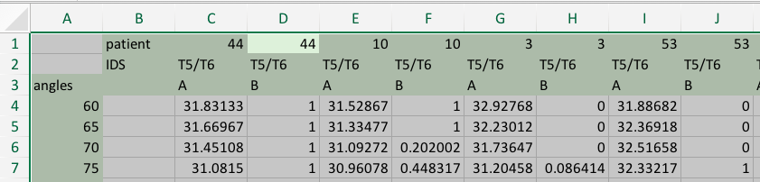

Well, here’s what I was dealing with:

Notice that we have 3 header rows, first with patient IDs, second with spine region, and third with variable names (A and B, to protect the innocent).
Goal
A dataset that, for each patient and each angle gives us corresponding values of A and B. So this would be a four-column data set with ID, angle, A and B.
Attempt 1 (readxl)
d1 <- readxl::read_excel('spreadsheet1.xlsx')
head(d1)
## # A tibble: 6 x 26
## X__1 patient `44` `44__1` `10` `10__1` `3` `3__1` `53` `53__1`
## <chr> <chr> <chr> <chr> <chr> <chr> <chr> <chr> <chr> <chr>
## 1 <NA> IDS T5/T6 T5/T6 T5/T6 T5/T6 T5/T6 T5/T6 T5/T6 T5/T6
## 2 angles <NA> A B A B A B A B
## 3 60 <NA> 31.83… 1 31.52… 1 32.9… 0 31.8… 0
## 4 65 <NA> 31.66… 1 31.33… 1 32.2… 0 32.3… 0
## 5 70 <NA> 31.45… 1 31.09… 0.20200… 31.7… 0 32.5… 0
## 6 75 <NA> 31.08… 1 30.96… 0.44831… 31.2… 8.641… 32.3… 1
## # ... with 16 more variables: `2` <chr>, `2__1` <chr>, `8` <chr>,
## # `8__1` <chr>, `6` <chr>, `6__1` <chr>, `43` <chr>, `43__1` <chr>,
## # `48` <chr>, `48__1` <chr>, `46` <chr>, `46__1` <chr>, `4` <chr>,
## # `4__1` <chr>, `9` <chr>, `9__1` <chr>
This strategy gives us funky column names, and pushes two of the headers into data rows. Since the headers are in rows, they’re a little harder to extract and work with.
Attempt 2 (tidyxl)
d2 <- tidyxl::xlsx_cells('spreadsheet1.xlsx')
head(d2)
## # A tibble: 6 x 21
## sheet address row col is_blank data_type error logical numeric
## <chr> <chr> <int> <int> <lgl> <chr> <chr> <lgl> <dbl>
## 1 T5T6 B1 1 2 FALSE character <NA> NA NA
## 2 T5T6 C1 1 3 FALSE numeric <NA> NA 44.
## 3 T5T6 D1 1 4 FALSE numeric <NA> NA 44.
## 4 T5T6 E1 1 5 FALSE numeric <NA> NA 10.
## 5 T5T6 F1 1 6 FALSE numeric <NA> NA 10.
## 6 T5T6 G1 1 7 FALSE numeric <NA> NA 3.
## # ... with 12 more variables: date <dttm>, character <chr>,
## # character_formatted <list>, formula <chr>, is_array <lgl>,
## # formula_ref <chr>, formula_group <int>, comment <chr>, height <dbl>,
## # width <dbl>, style_format <chr>, local_format_id <int>
THe xlsx_cells captures the data in a tidy fashion, explicitly calling out rows and columns and other metadata within each cell. We can clean up this data using tidyverse functions:
library(tidyverse)
cleanData1 <- function(d) {
angle <- d %>% filter(row >= 4, col == 1) %>% pull(numeric)
name <- d %>% filter(row %in% c(1,3), col >= 3) %>%
mutate(character = ifelse(is.na(character), as.character(numeric),
character)) %>%
select(row, col, character) %>%
filter(!is.na(character)) %>%
spread(row, character) %>%
unite(ID, `1`:`3`, sep = '_') %>%
pull(ID)
data <- d %>% filter(row >= 4, col >= 3) %>%
filter(!is.na(numeric)) %>%
select(row, col, numeric) %>%
spread(col, numeric) %>%
select(-row) %>%
set_names(name) %>%
cbind(angle) %>%
gather(variable, value, -angle) %>%
separate(variable, c('ID','Measure'), sep = '_') %>%
spread(Measure, value) %>%
select(ID, angle, A, B) %>%
arrange(ID, angle)
return(data)
}
head(cleanData1(d2))
## ID angle A B
## 1 10 60 31.52867 1.000000
## 2 10 65 31.33477 1.000000
## 3 10 70 31.09272 0.202002
## 4 10 75 30.96078 0.448317
## 5 10 80 30.79397 0.670876
## 6 10 85 30.52185 0.461406
This is a lot of data munging, and though dplyr is powerful, it took a lot of trial and error to get the final pipeline done.
Nonetheless, I was really psyched about tidyxl, since it made a job that would have taken manual manipulation automated (I had 12 spreadsheets like this process). I was going to write a blog post on this cool package that made my life dealing with this messy Excel file a piece of cake. But wait, there’s more…
Attempt2 (tidyxl + unpivotr)
I didn’t know about unpivotr until this post:
So maybe all that complicated munging can be simplfied.When your spreadsheet is too 😱😩😡 for readxl, tidyxl + unpivotr helps you tackle charming features like “data as formatting” and “data in the layout”. https://t.co/ABerpfHT8W
— Jenny Bryan (@JennyBryan) December 7, 2017
# devtools::install_github('nacnudus/unpivotr')
library(unpivotr)
cleanData2 <- function(d){
d %>% select(row, col, data_type, numeric, character) %>%
behead('N', ID) %>%
behead('N', spine) %>%
behead('N', variable) -> bl
bl1 <- bl %>% filter(variable == 'angles') %>% spatter(variable) %>%
select(row, angles)
bl2 <- bl %>% filter(variable %in% c('A','B')) %>% select(-spine, -col) %>%
spatter(ID) %>%
select(-character) %>%
gather(ID, value, -row, -variable) %>%
spread(variable, value)
final <- bl1 %>% left_join(bl2) %>% arrange(ID, angles) %>% select(ID, everything(),-row)
return(final)
}
cleanData2(d2)
## # A tibble: 588 x 4
## ID angles A B
## <chr> <dbl> <dbl> <dbl>
## 1 10 60. 31.5 1.00
## 2 10 65. 31.3 1.00
## 3 10 70. 31.1 0.202
## 4 10 75. 31.0 0.448
## 5 10 80. 30.8 0.671
## 6 10 85. 30.5 0.461
## 7 10 90. 30.3 0.245
## 8 10 95. 30.0 0.159
## 9 10 100. 29.7 0.170
## 10 10 105. 29.2 0.421
## # ... with 578 more rows